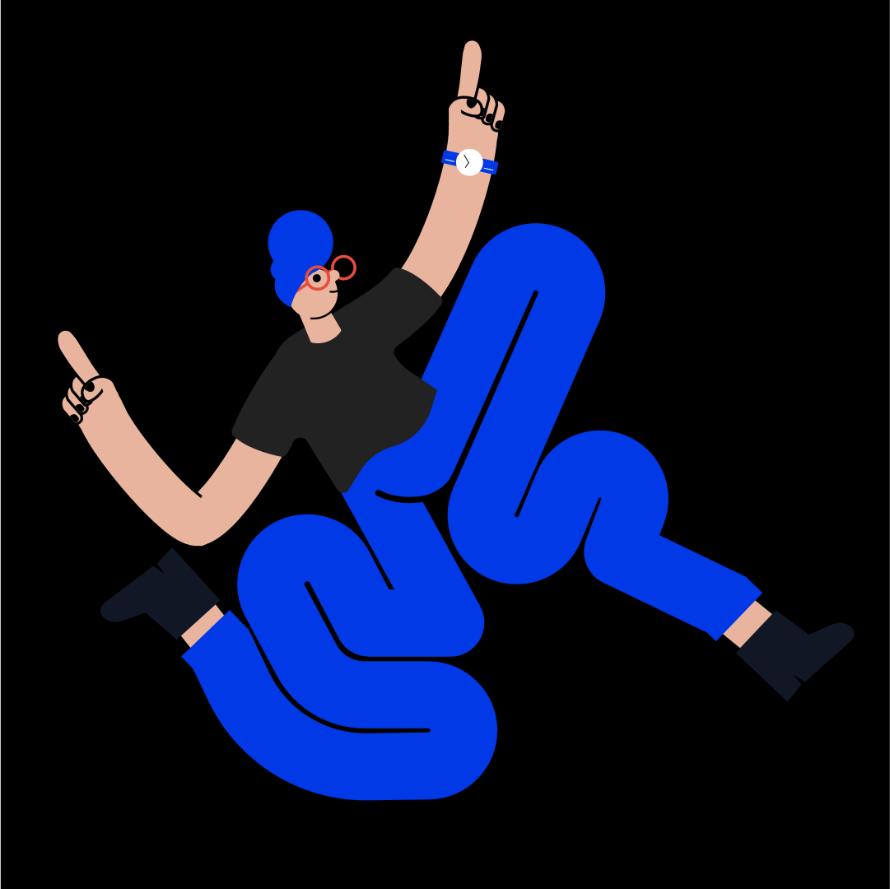

Hook Menu

Hook menu resigned in ways to improve users traffic in the menu sections.
The old Hook website had no universal navigation. Users had to click the hamburger nav to reveal only 4 menu items which caused reduction of web traffic.
With new improved nav with universal access, users can go to the hamburger menu to see more things about Hook without needing to go back to landing pages.
See Site


As working on the new menu design, I also had an opportunity to work on their articles page ( Arts & Craft ).

We included filters to help people find the right articles they wishes to read. With exploration and figuring out our needs we went with chips approach instead of doing search bar
I also proposed to add more visuals weight to the content to make articles more enjoying to gloss through. The previous generations, the news page was more writing focus which seeing 20 articles with large text all way down the page will get readers fatigue before they even get to deep read.
Starbucks Illustrations

Existing Designs

Existing Starbucks landing page has no hero section which leads a boring product page.
Proposed Designs
Embracing hero section to Starbucks page help land users to a more enjoying experience.
As working on the new hero design, I also had an worked on to work on spot illustration to show case the visuals can work many ares of site.


Existing Designs

This part of getting users attention to get them to use the reward point is crucial to Starbucks profiting. I scrolled right passed the 1,2,3 step because it was so boarding to even try to catch my attention.
Proposed Designs
Starbucks uses Illustrations in paper products, cards and all over their interior stores. They are missing opportunities to connect artist and designers to create illustrations for their webpages to make it feel less corporate bland site and more focus servicing the goods to the users.


As for footer, adding a full illustration on the bottom also help carry the users to end of the website.
Instrument page

As being a Instrument agency intern, we had a side project creating a intern web page that helps new comers read about what like being a intern at instrument. They can also apply to open any open roles. The careers page felt to intimidating for new comers to read and apply.
As being a Instrument agency intern, we had a side project creating a intern web page that helps new comers read about what like being a intern at instrument. They can also apply to open any open roles. The careers page felt to intimidating for new comers to read and apply.
As being a Instrument agency intern, we had a side project creating a intern web page that helps new comers read about what like being a intern at instrument. They can also apply to open any open roles. The careers page felt to intimidating for new comers to read and apply.
Otto

Proposed Designs

Proposed Designs

Proposed Designs
OTTO O

OTTO T
OTTO T
OTTO O
Google Braille
Buddy with Nik Delgado

" Seeing the Google logo in Braille already tells me instantly what I am going to be observing. Nice work!
– JR Schmidt
Our Final results composed as how we are doing a Google Tv ads showcasing using existing Google Pixel product in screenless format for braille use.

Old Existing Starbucks page with no hero section which leads to not fun experiance and just product
We learned that setting the tablet on the speaker dock would be arm sore for visual blind users. We went back and just focus on the tablet design.